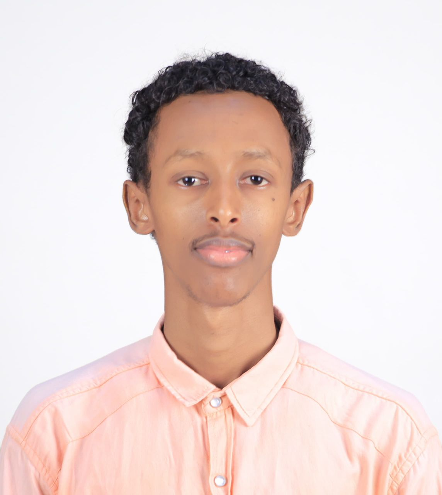

My name is Suleiman Abdimalik, and I am a university student with a strong interest in Computer Science, technology, humanitarian work, research, data collection, and community development.
I have practical experience in research and field data collection, having worked as a Research Assistant / Field Data Collector with Daljir Consulting & Research. Through this experience, I developed skills in data collection, field research, community engagement, and working with different groups of people.
I have experience and knowledge in several data and information management tools, including KoboToolbox, ODK, Microsoft Excel, Power BI, QGIS, and ActivityInfo. I am particularly interested in using data and technology to support better decision-making and improve humanitarian and development programs.
My professional interests include humanitarian assistance, protection and safeguarding, WASH, health and nutrition, food security, durable solutions for IDPs, Monitoring, Evaluation, Accountability and Learning (MEAL), community engagement, youth participation, and the Sustainable Development Goals (SDGs).
I am also continuously developing my technical skills in programming, web development, Python, and Artificial Intelligence/Machine Learning. My goal is to combine technology, data, and humanitarian knowledge to develop practical digital solutions that can contribute to solving real-world challenges.
I am passionate about learning, innovation, youth development, community impact, and continuous self-improvement. I am always looking for opportunities to gain new experience, build meaningful connections, and use my skills to contribute positively to my community and beyond.